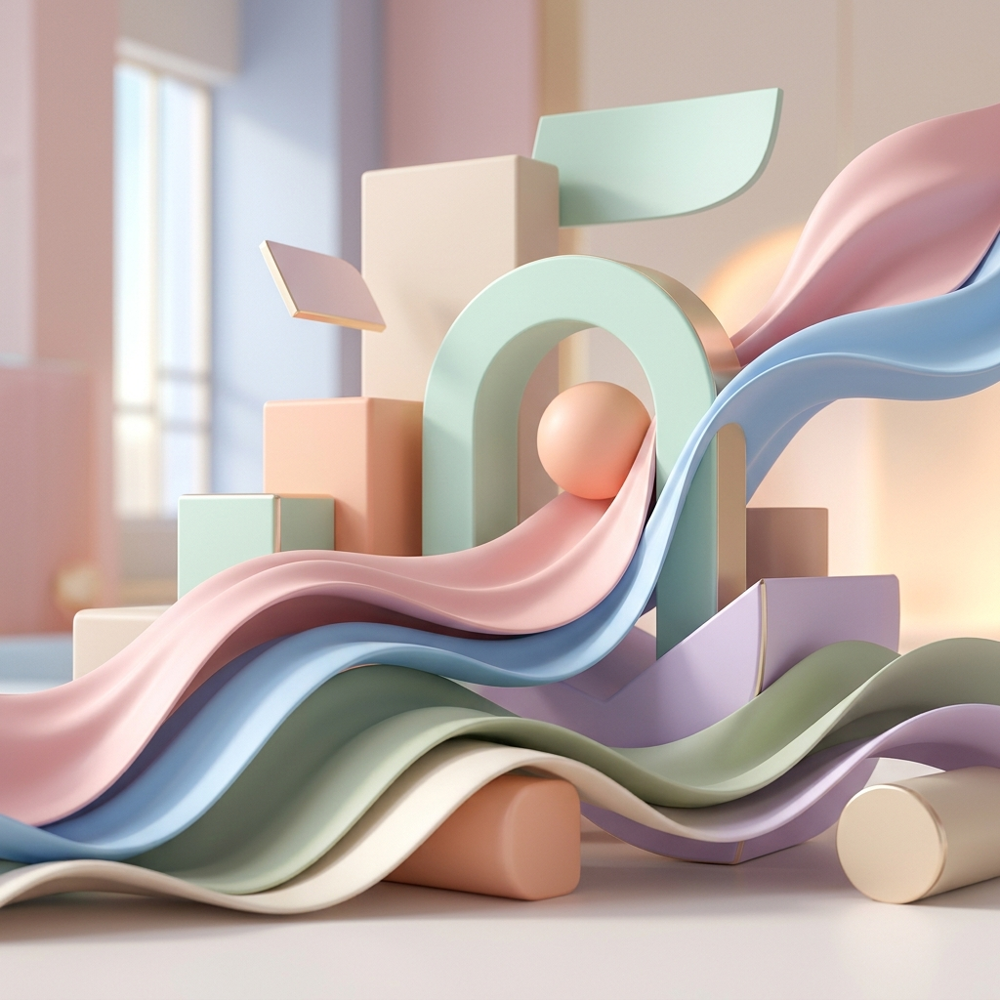

ثلاثي الأبعاد
21 يونيو 2026
4 دقائق قراءة
اتجاهات التصميم ثلاثي الأبعاد في الويب الحديث
نظرة عميقة في كيفية دمج العناصر ثلاثية الأبعاد التفاعلية لتحسين تجربة المستخدم وجعل واجهات الويب نابضة بالحياة.
اقرأ المزيد